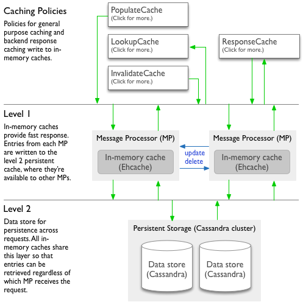

Cache internals
This topic describes the workings of the cache beneath policies such as the http://docs.apigee.com/node/15596, http://docs.apigee.com/node/15581, http://docs.apigee.com/node/15586, and http://docs.apigee.com/node/26.
[toc]
Shared and environment caches
Each caching policy you configure can use one of two cache types: an included shared cache that your applications have access to and an environment cache that you create.
- Shared cache -- By default, your proxies have access to a shared cache included for environments you create. The shared cache works well for basic use cases.
You can work with the shared cache only by using caching policies. It can't be managed using the management API. You can have a caching policy use the shared cache by simply omitting the policy's <CacheResource> element.
- Environment cache -- When you want to configure cache properties with values you choose, you can create an environment-scoped cache. For more about creating a cache, see http://docs.apigee.com/node/10170.
When you create an environment cache, you configure its default properties. There is no limit to the number of caches you can create. You can have a caching policy use the environment cache by specifying the cache name in the policy's <CacheResource> element.
Object size limit in cache
The maximum size of each cached object is 512 kb. For more information, see Managing cache limits.
In-memory and persistent cache levels
Both the shared and environment caches are built on a two-level system made up of an in-memory level and a persistent level. Policies interact with both levels as a combined framework. The relationship between the levels is managed by the system.

- Level 1 is an in-memory cache (L1) for fast access. Each message processing node has its own in-memory cache (implemented from Ehcache) for the fastest response to requests.
- On each node, a certain percentage of memory is reserved for use by the cache.
- As the memory limit is reached, Apigee Edge removes cache entries from memory (though they are still kept in the data store) to ensure that memory remains available for other processes.
- Entries are removed in the order of time since last access, with the oldest entries removed first.
- These caches are also limited by the number of entries in the cache.
- Level 2 is a persistent cache (L2) beneath the in-memory cache. All message processing nodes share a cache data store (Cassandra) for persisting cache entries.
- Cache entries persist here as they're removed from in-memory caches, such as when in-memory limits are reached.
- Because the persistent cache is shared across message processors (even in different regions), cache entries are available regardless of which node receives a request for the cached data.
- This cache is limited in that only entries of a certain size may be cached.
- There is no limit on the number of cache entries. The entries are expired in the persistent cache only on the basis of expiration settings.
For HIPAA (Health Insurance Portability and Accountability Act) and Payment Card Industry (PCI) organizations, caching is in-memory only.
How policies use the cache
The following describes how Apigee Edge handles cache entries as your caching policies do their work.
- When a policy writes a new entry to the cache (PopulateCache or ResponseCache policy):
- The entry is written to the in-memory L1 cache on only the message processor that handled the request.
- As L1 memory limits are reached, the entry is moved to L2 cache in Cassandra, where it is accessible by all of the message processors. Only entries that are 512 kb or less are moved to L2. Anything larger disappears from cache.
- When a policy reads from the cache (LookupCache or ResponseCache policy):
- The system looks first for the entry in the in-memory L1 cache of the message processor handling the request.
- If there's no corresponding in-memory entry, the system looks for the entry in the L2 persistent cache.
- If the entry isn't in the persistent cache:
- LookupCache policy: No value is retrieved from the cache.
- ResponseCache policy: The actual response from the target is returned to the client, and the entry is stored in cache until it expires or is invalidated.
- When a policy updates or invalidates an existing cache entry (InvalidateCache, PopulateCache, or ResponseCache policy):
- The message processor receiving the request sends a broadcast to update or delete the entry in L1 cache on itself and all other message processors in all regions.
- If the broadcast succeeds, each receiving message processor updates or removes the entry in L1 cache.
- If the broadcast doesn't succeed, the invalidated cache value remains in L1 cache on the message processors that didn't receive the broadcast. Those message processors will have stale data until the entry's time-to-live expires. After expiration, those message processors retrieve the value from L2 cache if the entry exists there.
- The broadcast also updates or deletes the entry in L2 cache, which all message processors share.
Managing cache limits
Through configuration, you can manage some aspects of the cache.
The in-memory overall maximum is limited by system resources, and is not configurable. The overall capacity of the persistent cache is effectively unlimited, though the maximum size for each cached object is 512 kb. (While you can add an object larger than 512 kb to in-memory L1 cache, that object won't be moved to the more persistent L2 database cache.)
- In-memory (L1) cache. Memory limits for your cache are not configurable. Limits are set by Apigee for each message processor that hosts caches for multiple customers.
In a hosted environment*, where in-memory caches for all customer deployments are hosted across multiple shared message processors, each processor features an Apigee-configurable memory percentage threshold to ensure that caching does not consume all of the application's memory. As the threshold is crossed for a given message processor, cache entries are evicted from memory on a least-recently-used basis. Entries evicted from memory remain in L2 cache until they expire or are invalidated.
- Persistent (L2) cache. There are no limits on the number of entries in the cache, though the size of each object is limited to 512 kb. Entries evicted from the in-memory cache remain in the persistent cache in keeping with configurable time-to-live settings.
* In Edge for Private Cloud, you have finer-grained control over memory used for caching, including the maximum amount available. Although the settings can be changed, it's typically not necessary to alter the default configuration.
Configurable optimizations
The following table lists settings you can use to optimize cache performance. You can specify values for these settings when you create a new environment cache, as described in http://docs.apigee.com/node/10170.
| Setting |
Description |
Notes |
| Skip if element size in KB exceeds |
If an entry exceeds the specified size, it will be skipped (not cached). |
This helps prevent caching overly large entries. The maximimum size for a cached object is 512 kb. |
| Expiration |
Specifies the time to live for cache entries. |
|